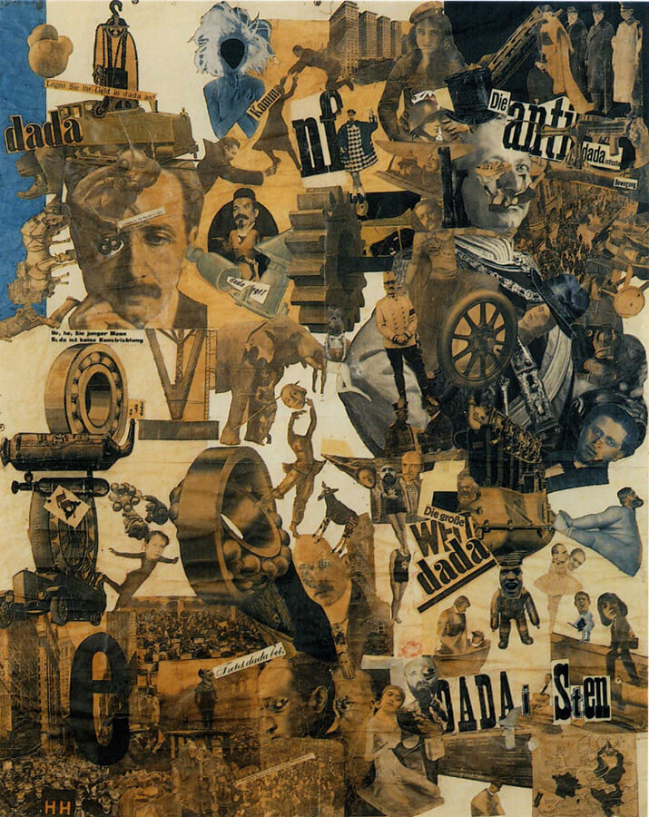
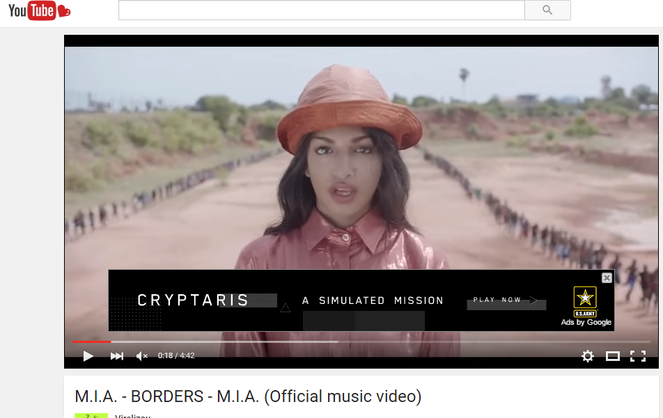

Cover artwork for my very first DJ mixtape (1999!), with a collage on the cover to underscore the cut & paste connection.
Marcus Boon’s delightful In Praise of Copying (2010, Harvard University Press) is available as a free PDF.
"Hannah Höch's 1919 breakout photomontage, Cut with the Dada Kitchen Knife through the Last Weimar Beer-Belly Cultural Epoch in Germany, set the tone early: cut breaks authority's framework, paste inserts radical new perspectives that challenge the smooth surfaces of power, and a little humor goes a long way." (p.143)

You can see her collage up close in this hi-rez scan.
Supercuts
"The suprisingly cathartic yet suspiciously short 'Every Scream from Every Arnold Movie' (only seven minutes of Schwarzenegger yelling?) is a prime example of supercuts, which aggregate thematic bits from TV and movies for absurd satirical effect." (p.143)
Fight the Power
Sample Biz
Gilbert O’ Sullivan’s original and Biz Markie’s sample-interpolation:
The Police into Puff:
Missing In Action
The first time I watched M.I.A.’s video for ‘Borders’, the following ad for the U.S. Army popped up.

CUMBIA
This is the norteño ballad (with English subtitles) from Los Tigres del Norte that sparked my engagement with Mexican music. Beside it is a cumbia from the classic Mexican cumbia band Super Grupo Colombia. The sweet simple lyrics (addressing all the locales where they sing cumbia to!) are typical.
Some cumbia sonidera selections from the world of Sonido Kumbala (Alejandro Aviles)
& a few of my own cumbia-centric mixes for your enjoyment:
Keep Going!
The world of cumbia is broad and deep. In 2008 I reported on the scene in Buenos Aires for The Fader. Kathy Ragland and Josh Kun have each published several excellent essays and articles on cumbia sonidera in the States: required reading. Conversation with Javier 'Sonido Martines' Martinez, Geraldine Juarez, Toy Selectah, and the sonideros themselves schooled me further.
In Mexico City, the Mexico City-based collectiveEl Proyecto Sonidero put out a PDF-book featuring Spanish-language writing and photography dedicated to that city's sonideros.
The last release on my record label was an excellent anthology by Sonido Martines: Nueva Cumbia Argentina. Easiest way to hear it might be Spotify.
Cuando Me Muera, Quiero Que Me Toquen Cumbia: Vidas de Pibes Chorros by Cristian Alarcón is a book-length ‘crónica’ examining social life among young cumbia fans in the Argentine villa.